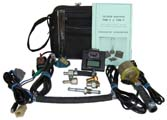

ТЕСТЕР ФОРСУНОК ТФМ-2

Тестер ТФМ-2 является анализатором давления топлива и портативным стендом промывки и контроля форсунок впрыска топлива.
Габариты прибора 68х70х20 мм. Прибор управляется двумя кнопками. Вывод информации производится на ЖК–индикатор с подсветкой на 2х8 символов.
Тестер ТФМ-2, комплектуемый датчиком давления и переходными штуцерами, позволяет измерить мгновенное давление бензина в топливной рампе и оценить его минимальное и максимальное пиковое значение.
В сравнении с манометром, применение датчика давления дает ряд преимуществ:
- цифровой вывод данных на дисплей прибора обеспечивает удобство и оперативность съема данных;
- не менее чем в десять раз повышается быстродействие контроля, что позволяет, например, оценить неисправность регулятора давления топлива и электробензонасоса на переменных режимах работы двигателя;
- при необходимости обеспечивается дистанционность контроля, что позволяет контролировать давление топлива в процессе движения автомобиля (из кабины) и, таким образом, оценивать причины провалов или недостаточной приемистости двигателя, связанные с недостаточной топливоподачей.
Тестер ТФМ-2, комплектуемый форсуночным кабелем, который подключается к жгуту форсунок инжекторного двигателя, позволяет неразборным методом выполнить промывку форсунок, протестировать форсунки на баланс и оценить качество промывки форсунок путем контроля перепадов давления топлива в рампе до и после промывки.
Тестер ТФМ-2 позволяет предварительно оценить работоспособность новой форсунки путем контроля на слух ее пороговой частоты срабатывания, для этого достаточно иметь малогабаритный источник =12В/0,3А и выполнить 1 или 2 теста управления форсункой.
Тестер ТФМ-2, имеет быстродействующий канал измерения бортового напряжения с точностью 0,1 В, что позволяет измерять мгновенное (текущее), минимальное и максимальное напряжение бортовой сети автомобиля, например, для оценки степени зарядки аккумулятора и исправности стартера при стартерной прокрутке двигателя, или для оценки пульсаций напряжения бортовой сети при неисправном генераторе.
В тестере ТФМ-2 предусмотрена программная калибровка измерительных каналов, что позволяет откалибровать каналы контроля давления и измерения бортового напряжения самостоятельно, используя поверенный манометр и обычный вольтметр.
ТФМ-2 работает в следующих режимах, выбираемых из экранного меню:
- «ТЕСТЫ»–тесты проверки форсунок.
- «2.5/500 »–баланс форсунок (сравнение форсунок по динамической производительности);
- «СТАТ.-5с»–измерение статической производительности форсунки;
- «2.0/4000»–измерение динамической производительности форсунки;
- «2.5/3000»–измерение динамической производительности форсунки;
- «9.0/800 »–измерение динамической производительности форсунки;
- «1.0/30с »–проверка пороговой частоты срабатывания форсунки;
- «1.5/30с »–проверка пороговой частоты срабатывания форсунки/промывка форсунки импульсами повышенной частоты;
- «0-8/30с »–промывка форсунки импульсами плавающей частоты.
- «ПОРОГ-Ф.»–проверка пороговой частоты срабатывания форсунок.
- «0.8/5с»–проверка пороговой частоты срабатывания форсунки. Длительность импульса 0.8 мс, период 4.1 мс, длительность теста 5 с;
- «0.9/5с»–проверка пороговой частоты срабатывания форсунки. Длительность импульса 0.9 мс, период 4.1 мс, длительность теста 5 с;
- «1.0/5с»–проверка пороговой частоты срабатывания форсунки. Длительность импульса 1.0 мс, период 4.1 мс, длительность теста 5 с;
- «1.1/5с»–проверка пороговой частоты срабатывания форсунки. Длительность импульса 1.1 мс, период 4.1 мс, длительность теста 5 с;
- «1.2/5с»–проверка пороговой частоты срабатывания форсунки. Длительность импульса 1.2 мс, период 4.1 мс, длительность теста 5 с;
- «1.3/5с»–проверка пороговой частоты срабатывания форсунки. Длительность импульса 1.3 мс, период 4.1 мс, длительность теста 5 с;
- «1.4/5с»–проверка пороговой частоты срабатывания форсунки. Длительность импульса 1.4 мс, период 4.1 мс, длительность теста 5 с;
- «1.5/5с»–проверка пороговой частоты срабатывания форсунки. Длительность импульса 1.5 мс, период 4.1 мс, длительность теста 5 с.
- «КОНТРОЛЬ»–контроль давления топлива и напряжения бортсети.
- «ДАВЛЕНИЕ»–контроль давления топлива по показаниям датчика с выводом текущего значения и экстремумов;
- «БОРТСЕТЬ»–контроль напряжения бортсети с выводом текущего значения и экстремумов.
- «КАЛИБР.»–калибровка канала датчика давления.
- «КОРР."+"»–смещение характеристики канала вверх;
- «КОРР."-"»–смещение характеристики канала вниз;
- «СБРОС »–обнуление корректирующей поправки характеристики.
На странице tfm.html приведена методика промывки форсунок.
На странице tfm.doc (50 kbytes) размещена статья «Портативные тестеры форсунок впрыска бензина».
В базовый комплект ТФМ-2 входят: прибор ТФМ-2, кабель питания, кабель форсунок, руководство пользователя, паспорт, перемычка реле ЭБН.
Дополнительно к базовому комплекту можно заказать:
Руководство по эксплуатации и паспорт на прибор ТФМ-2 в формате *.pdf можно взять здесь.
На странице price.html приведены цены на продукцию ООО «А2».
Заказ прибора ТФМ-2